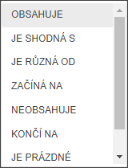

Filtrování dat
Pomocí této funkce může uživatel filtrovat data, tzn. vybrat určitá data vyhovující zadané podmínce.
Nad každým sloupcem lze zadat až dva filtry najednou - například vypsat data se jménem dlužníka NOVÁK a NOVOTNÝ.
Toto lze kombinovat nad více sloupci např. - např. NOVÁK z BEROUNA a PARDUBIC s dluhem větším než 10 000 Kč.
Každý filtr má různé definice filtrů dat a to vždy podle typu dat - textové typy či datumové/číselné typy.

Tečka (v profilu EOS je červená) znamená aplikovaný filtr nad příslušným sloupcem.